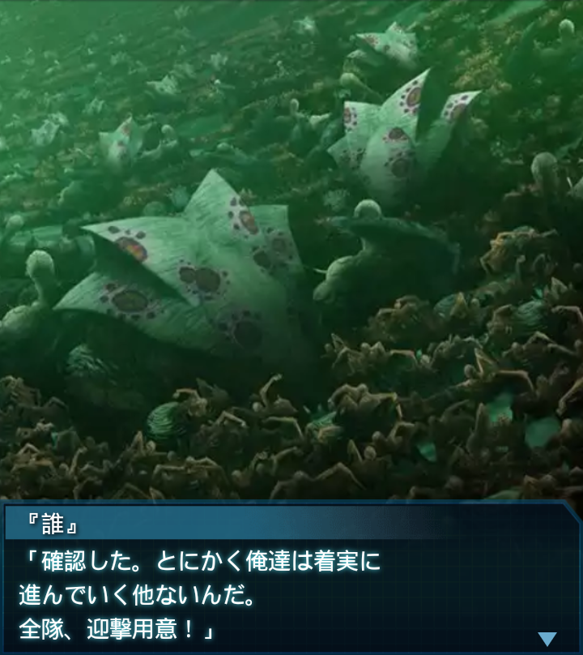

中国・オリジナルハイヴ内部2
リリア
「『誰』大尉…確認ですが。
大尉の仮説では、このハイヴの
反応炉は生きてるんですよね？」
『誰』
「そうだ。２つのハイヴにある
反応炉のうち、この世界のものは
破壊されたが――」

『誰』
「本来別世界にあったもう１つの
ハイヴの反応炉は生きている」
『誰』
「さっきも言ったが、俺はＢＥＴＡ
再活性化はそれが原因だと
思っているからな」
リリア
「では、その反応炉を破壊すれば、
世界の融合は解消されると思い
ますか？」
『誰』
「…正直それはわからない。そんな
単純な話ではないとも思うが…
ただ可能性は十分ある」
『誰』
「もっともその可能性がゼロでも、
オリジナルハイヴの反応炉は破壊
しなければならないんだが」
リリア
「それはそうですね」
篁唯依
「――『誰』大尉！
前方にＢＥＴＡ反応多数！」

『誰』
「確認した。とにかく俺達は着実に
進んでいく他ないんだ。
全隊、迎撃用意！」
篁唯依
「『誰』大尉、これより先に
戦闘の痕跡がありませんね。ここは
別世界のハイヴだったか…」
『誰』
「この世界では、人類はここまで
しか到達する事ができなかったと
言う事か…」
篁唯依
「その世界の人達の無念が…
ひしひしと伝わってきます。我が事
のように悔しいです…」
篁唯依
「このハイヴが元々あった世界…
そこに生きる人類は、一体
どうなっているんでしょうか…」
『誰』
「悲観しても始まらない。俺達は
人類の未来の為にここにいるんだ。
立ち止まらずに進もう」
篁唯依
「了解！」
『誰』
（…とは言え、あまりにも深く
来すぎたな。正直怖い。Ａ－０１
部隊の隊員もそうだったのか…）

『誰』
（俺達と違って、全てが初めて
だったんだ、当然だろう）
『誰』
（それでもやり遂げた。できずとも
ここまで突き進んだ。絶対に弱音
など見せる訳にはいかない）
『誰』
（俺の言葉を信じてくれた司令、
尽力してくれた人達、そして同行
してくれた仲間達――）
『誰』
（その想いに応えるためにも、
絶対に最深部に進んで、やり遂げ
てやるっ！！）